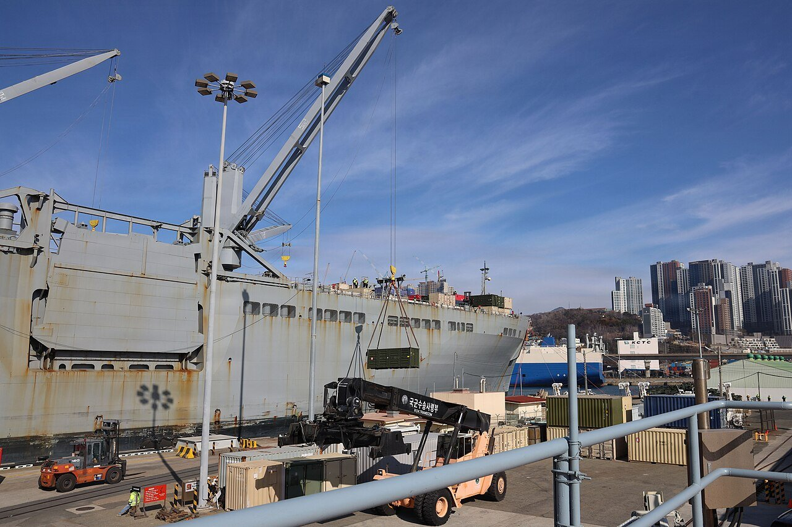
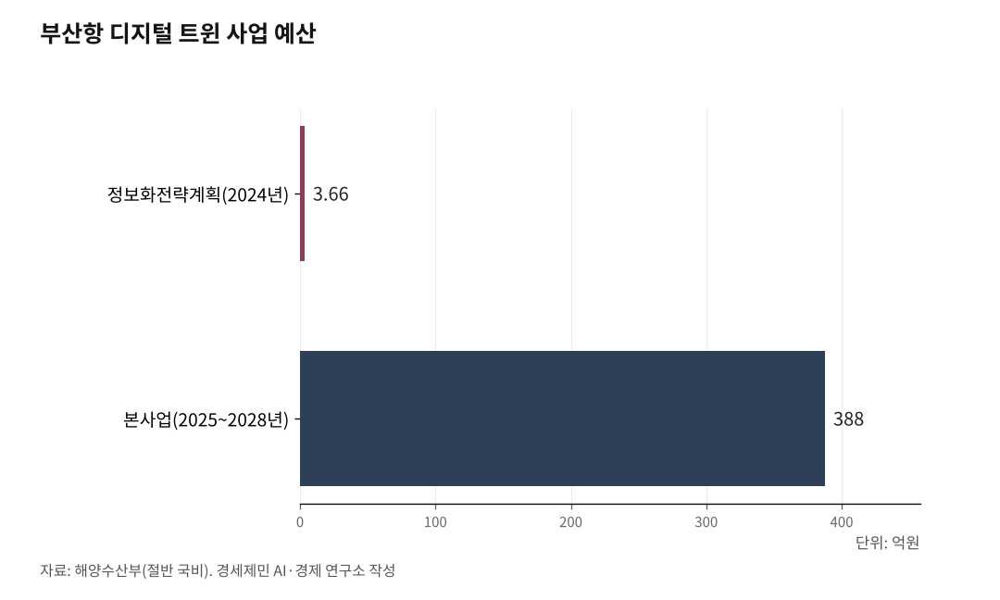

[해양 AI 융복합⑩] 부두 하나서 효율 17% 올린 디지털 트윈, 부산항 전체로 넓히는 388억원 계획
싱가포르 항만 가상 모형 2025년 가동, 한화오션은 선체까지 트윈으로
선도 항만도 다섯 단계 가운데 넷째, 걸림돌은 흩어진 데이터
크레인을 옮기고 선석을 바꾸는 일은 한 번 틀리면 되돌리기 어렵다. 그래서 항만과 조선소는 현장을 컴퓨터 속에 옮겨 놓고 먼저 돌려 본다. 디지털 트윈이 부산항과 싱가포르항, 배 한 척에서 어디까지 왔는지 사실로 짚는다.
1. 가상 부두에서 먼저 돌린 신항 1부두

디지털 트윈은 실제 항만을 컴퓨터 속에 쌍둥이처럼 옮겨 놓은 가상 모형이다. 해양수산부는 3D 기술 등으로 현실세계를 가상세계에 구현하는 기술이라고 설명한다.
항만에 쓰면 바다와 육지 전 구간에서 나오는 데이터를 실시간으로 나누고 분석한다. 그 데이터로 여러 경우를 미리 돌려 보고 가장 막힘없는 물류 흐름을 찾는다.
스웨덴 린셰핑대 연구진은 2023년 학술대회 논문에서 항만 디지털 트윈이 하는 일을 셋으로 풀었다. 과거 기록에서 비효율의 원인을 찾고, 지금 운영 상황을 한눈에 보고, 앞날을 미리 돌려 본다.
부산항만공사는 2021년 시범사업으로 부산항 신항 1부두에 이 기술을 처음 적용했다. 해양수산부 발표로는 항만 운영 효율이 17% 올랐다. 배가 내뿜는 탄소는 33% 줄었다.
현장을 건드리기 전에 화면 속에서 먼저 답을 맞혀 본 결과다.

2. 부두 하나에서 부산항 전체로
해양수산부는 2024년 3월 이 기술을 부산항 전체로 넓히는 일에 나섰다. 터미널 하나에 머물던 범위를 항만 전체를 묶는 통합 시스템으로 키우는 사업이다.
먼저 시스템을 만들기 전에 짜는 설계도인 정보화전략계획을 세웠다. 사업시행자는 부산항만공사였다. 2024년 3~12월 예산은 3억6600만원이고 절반이 국비다.
본사업 계획은 2025~2028년 388억원이다. 역시 절반을 국비로 지원해 플랫폼을 개발하고 성능을 인증한다. 정보화전략계획에는 핵심 소프트웨어 국산화 방안과 다른 항만 확대 전략도 담기로 했다.
플랫폼이 완성되면 가상 모형에서 선박 입출항과 선석 배치, 하역장비 배치 계획을 뽑아 현장에 쓴다. 해양수산부는 시간당 화물처리 속도가 빨라지고 선석 대기시간이 줄 것으로 내다봤다.
부산항만공사는 2025년 8월 진해신항에 해양인프라 디지털 트윈을 짓는다고 밝혔다. 18개월 일정으로 진행하는 용역이다. 앞바다 파고와 기후 데이터를 실시간으로 받아 공사와 터미널 운영 중 파도가 넘쳐 드는 사고에 대비한다.
3. 싱가포르, 항만을 통째로 가상에
싱가포르는 항만 하나를 통째로 먼저 옮겼다.
싱가포르 첫 해사 디지털 트윈이 2025년 3월 24일 문을 열었다. 해사항만청이 정부기술청과 함께 만든 싱가포르항 가상 모형이다.
이 모형은 선박과 항만 운영, 환경 센서에서 실시간 데이터를 받는다. 쓰임새도 구체적이다. 메탄올과 암모니아 같은 새 연료를 배에 넣을 때 가스가 어떻게 퍼지는지 미리 돌려 본다. 기름 유출 같은 사고 위험도 따진다.
해사항만청은 기업과 연구자가 새 운영 방식을 실제로 쓰기 전에 시험해 보는 시험장으로 이 모형을 내놨다. 2025년 하반기부터 시범 사용자에게 열겠다고 그때 밝혔다.
무랄리 필라이 법무·교통부 국무장관은 개막 연설에서 이 모형을 다른 나라 항만으로 넓힐 수 있다고 했다. 싱가포르가 여러 나라와 맺은 녹색·디지털 해운항로가 그 통로다.
항만 하나의 모형을 항로를 따라 바깥으로 잇겠다는 구상이다.
4. 배 한 척도 가상으로
디지털 트윈은 항만을 넘어 배 한 척에도 들어간다.
한화오션은 2025년 3월 미국선급(ABS)에서 '티어3' 개념승인을 받았다. 선체 구조 건전성 모니터링 최고 등급이다. 2024년 9월 ABS와 맺은 기술협력 협약에서 나온 성과다.
개념승인은 선급이 기술의 안전성과 실현 가능성을 인정하는 절차다. 티어3를 받으려면 하중 센서가 붙지 않은 부위까지 안전성을 평가할 수 있어야 한다.
이 시스템은 선체에 남은 피로 수명을 예측하고 검사 시기를 미리 알려 준다. 정기 검사에 기대던 보수적 평가를 덜어 검사 시간과 비용을 줄인다는 설명이다. 한화오션은 2026년 실제 해양플랜트 탑재를 목표로 잡았다.
핵심 기술은 인하대 조선해양공학과 김유일 교수 연구팀이 만들었다. 인하대는 이 기술이 한화오션의 티어3 승인에 결정적 역할을 했다고 밝혔다.
연구팀은 배의 흔들림과 변형, 가속도를 잰다. 그 값으로 실제 바다의 파도 방향과 주기, 크기를 거꾸로 계산한다. 운항 중인 배가 곧 움직이는 파도 관측 부이가 된다.
5. 다섯 단계 가운데 넷째
연구진은 같은 논문에서 항만 디지털 트윈의 성숙도를 다섯 단계로 나눴다. 복제, 연결, 동기화, 상호작용, 자동화다.
앞의 셋은 시설을 디지털로 옮기고 모형을 이어 실시간 데이터를 받는 단계다. 넷째는 현장과 데이터를 주고받으며 장비를 원격으로 움직이고, 다섯째는 스스로 판단한다.
연구진은 싱가포르와 로테르담, 중국 마완항을 이 잣대로 쟀다. 세 항만 모두 넷째 단계까지 왔다고 봤다. 로테르담은 센서로 물과 날씨 상태를 읽고 선박 입출항 시각을 예측해 대기시간을 줄인다.
연구진은 걸림돌도 짚었다. 항만에 얽힌 여러 기관이 서로 이어지지 않은 정보시스템을 따로 쓴다. 디지털 트윈을 얼마나 키울지는 그 항만이 가진 돈과 기술에 크게 달렸다고 했다.
연구진은 많은 항만이 물동량과 재정 여건에서 세 항만과 크게 달라 항만 전반 사정을 보여 주지는 않는다고 덧붙였다.
부산항은 2021년 부두 하나에서 효과를 확인했다. 항만 전체를 묶는 플랫폼은 2028년을 목표로 잡았다. 흩어진 데이터를 한 모형에 모으는 일이 그 사이에 놓여 있다.
참고문헌
가. 정부·공공기관 발표
- 해양수산부 스마트해운물류팀, 「가상 모형(디지털트윈) 항만 구축 본격 시동」(보도자료), 2024.3.20., https://www.mof.go.kr/doc/ko/selectDoc.do?docSeq=56229&bbsSeq=10&menuSeq=971
- "가상 모형(디지털트윈) 항만 구축 본격 시동", KDI 경제교육·정보센터 경제정책자료(해양수산부 해운물류국 스마트해운물류팀), 2024.3.21., https://eiec.kdi.re.kr/policy/materialView.do?num=249298
- "Singapore Advances Maritime Innovation with Geospatial Partnerships and Launches Maritime Digital Twin", 싱가포르 해사항만청(MPA), 2025.3.26., https://www.mpa.gov.sg/media-centre/details/singapore-advances-maritime-innovation-with-geospatial-partnerships-and-launches-maritime-digital-twin
- "Speech by Minister Of State for Law and Transport, Mr Murali Pillai at the Singapore Maritime Week 2025 Opening Ceremony", 싱가포르 교통부, 2025.3.24., https://www.mot.gov.sg/news-resources/newsroom/speech-by-minister-of-state-for-law-and-transport--mr-murali-pillai-at-the-singapore-maritime-week-2025-opening-ceremony/
- "19th Singapore Maritime Week Opens with Record Attendance and Industry Participation at EXPO@SMW", 싱가포르 해사주간(주최 싱가포르 해사항만청), 2025.3.24., https://www.smw.sg/media-room/media-release-articles/2025/03/24/19th-singapore-maritime-week-opens-with-record-attendance-and-industry-participation-at-expo-smw
- 인하대학교 홍보팀, "'디지털 트윈' 기술로 스마트 선박 구조 건전성 관리 혁신", 인하대학교 누리집, 2025.12.4., https://www.inha.ac.kr/bbs/kr/11/42473/artclView.do
나. 논문
- Robert Klar, Anna Fredriksson, Vangelis Angelakis, "Assessing the Maturity of Digital Twinning Solutions for Ports", 2023 IEEE International Conference on Pervasive Computing and Communications Workshops(PerCom Workshops), pp.552-557, 2023., DOI 10.1109/PerComWorkshops56833.2023.10150378 (원문 arXiv:2212.07722, https://ar5iv.labs.arxiv.org/html/2212.07722)
다. 언론 보도
- "'항만물류 디지털트윈 플랫폼 구축 사업' 정보화전략계획(ISP*) 수립 추진", 해사정보신문, 2024.3.20., https://www.haesainfo.com/news/articleView.html?idxno=40921
- 박미영, "해수부, 디지털트윈 항만 구축 본격 시동", 보안뉴스, 2024.3.21., https://www.boannews.com/news/articleView.html?idxno=127956
- 서영인, "부산항만공사, AI 기반 항만 인프라 디지털화 착수", 이투데이, 2025.8.27., https://www.etoday.co.kr/news/view/2500580
- 손연우, "부산항만공사, 진해신항에 항만특화형 AI 혁신기술 도입", 쿠키뉴스, 2025.8.27., https://www.kukinews.com/article/view/kuk202508270059
- 김종휘, "싸이버로지텍, 'ECS·디지털 트윈' 개발 착수", 카고뉴스, 2025.11.13., https://www.cargonews.co.kr/news/articleView.html?idxno=58990
- 최유빈, "한화오션, 스마트 기술로 실시간 '선박·해양 플랜트' 안전 진단", 시대, 2025.3.21., https://www.sidae.com/article/2025032108472491533
- 이주영, "한화오션, '최고도화' 스마트 선박진단 솔루션 개발", 스마트투데이, 2025.3.21., https://www.smarttoday.co.kr/ko-kr/articles/75814
- 박세진, "한화오션, '티어 3' 스마트 선체 모니터링 기술 개발", 이코노미스트, 2025.3.21., https://economist.co.kr/article/view/ecn202503210030
- 이선용, "인하대, '디지털 트윈' 기술로 스마트 선박 구조 건전성 관리 혁신", 대학저널, 2025.12.4., https://dhnews.co.kr/news/view/1065574213365672
- 전예준, "'파도방향·주기·크기' 역추정…선박구조 디지털 트윈 기술", 뉴시스, 2025.12.4., https://www.newsis.com/view/NISX20251204_0003428022
라. 사진 출처
- [사진1] Sgt. Deziree Keay(미 육군), "Crane lifts container from vessel (9551822).jpg", 위키미디어 공용, 퍼블릭 도메인(미국 연방정부 저작물), https://commons.wikimedia.org/wiki/File:Crane_lifts_container_from_vessel_(9551822).jpg